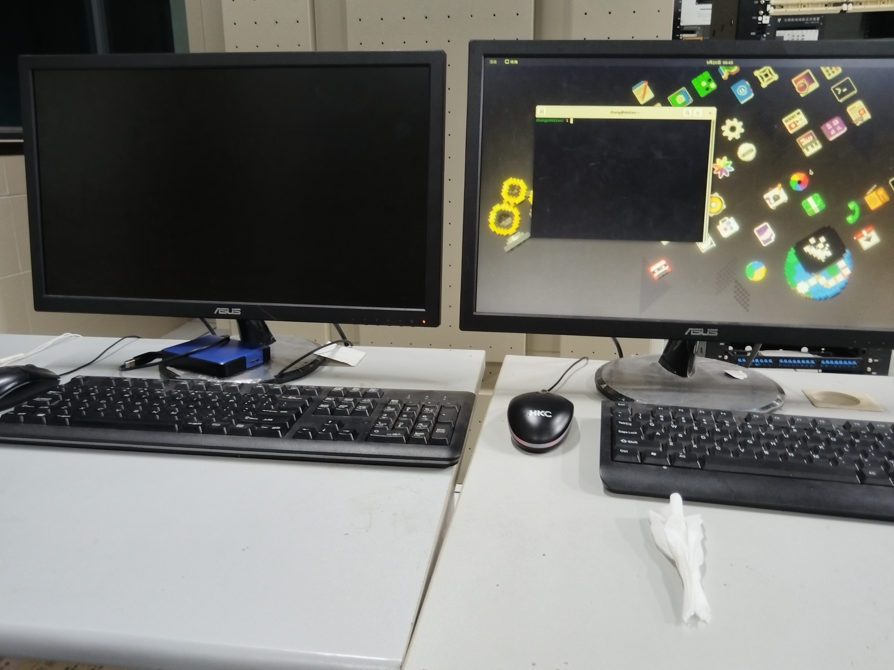
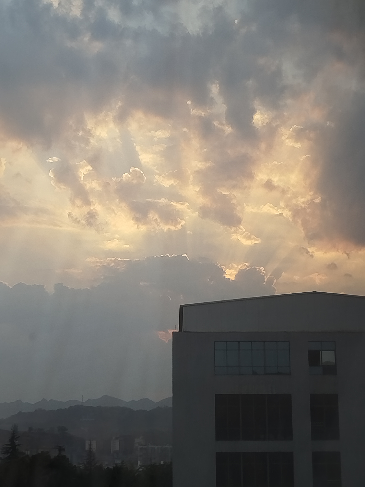
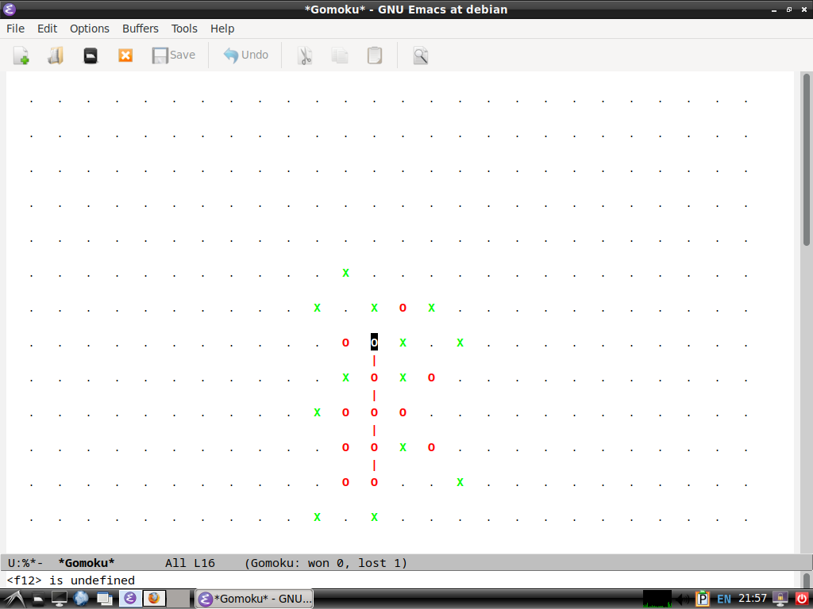
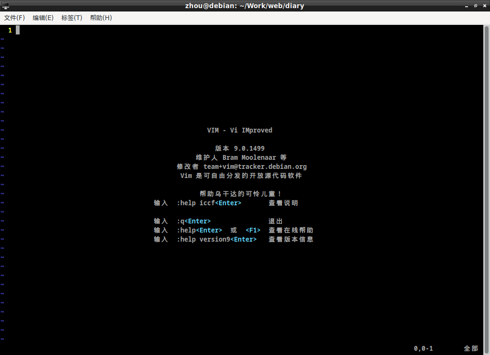
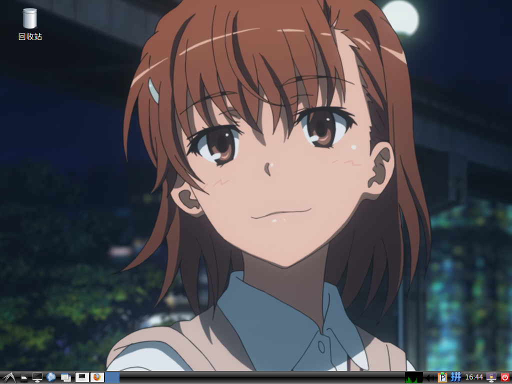
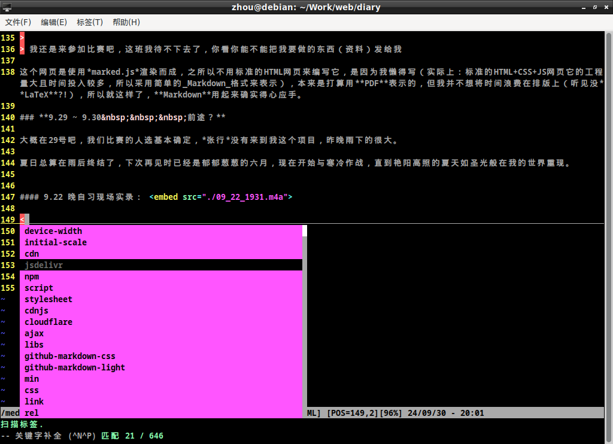
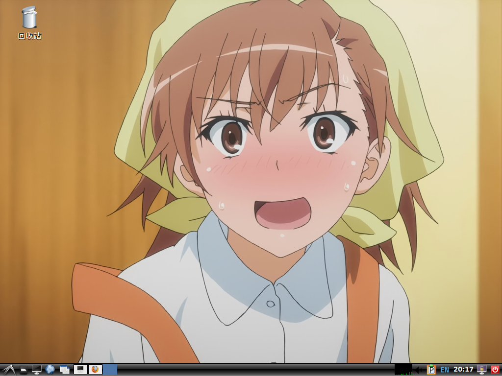

# **引言** > 最荒诞的，即创作者。 > > 在荒诞推理的时间段，创作追随着冷漠和发现，标明荒诞激情冲起之点，正是推理停止之处。创作在本文中的地位，就这样名正言顺了。 > > —— 阿尔贝·加缪《西西弗神话》 > > > “五月的一个晴朗的早晨，在布洛涅森林的花径上，可能会看到一位优雅的年轻女骑手骑着一匹漂亮的红棕色母马” > > —— 阿尔贝·加缪《鼠疫》 # **第一部分 - 第一节** ## **24.9.18 ~ 9.20** 九一八开学，不知道你们那边如何安排，这是我在开学第二天晚上写的（20:14），你们当时在干什么，也许是晚自习？现在的心情比较失落（迷失），十八号当晚我与同班的另一位同学一同去找我们的比赛指导老师，得到一个谎言，完了，这就是我当时的心情，可能是我太年轻气盛，心急是吃不了热豆腐的，毕竟才开学一天。可何时才能等到胜利的消息才是我最关心的问题。 可我已经等不及了，心急如焚。在这个学校给我有一种温水煮青蛙的感觉，虽说是“快乐教育”说白了就是被高中和大学淘汰的没有出息的人（这个没有出息并不是我说的，是一个北大教授说的，我认可他的观点）温馨摇篮罢了，来我们这里上课的老师，要么是师范大学毕业来实习的，要么就是在同一学校呆了十几年没有任何长进的“老教师”，这个学期开学我们的数学、语文、政治老师都换了。迟早要被水给烫死更别提大专了，对了，我们2025年3月就“高考”完了然后毕业，高中三年就这样结束了，我会在那时喃喃地说出这句话，正如我在23年6月时那样。结束了。真相都是残酷的。我们年级有四个班去实习，班主任说本来是我们去实习的，原因是我们班纪律不好，太好了！25年3月就是我们去了！（讥笑）。无产者永远一无所有。没错，不出意外的话就是这样了，基本既定的未来。我们班不去实习，这正和我意。这段话写于9.20-20：39，家里的苹果电脑已经被换了系统（[fedora gnome desktop](https://fedoraproject.org/workstation/)），大概是有兼容性问题，打开内置的一些应用它的边框会闪烁，打算换一个桌面（[MATE desktop](https://fedoraproject.org/spins/mate/)）。讲个好笑的，我们语文作文只写200～300字左右，这学期新定的。也许我这个就算是写作文？如果你觉得我写的不好，那你就笑一笑，我们已经不在同一境界了。自始至终我们都走在同一条道路上，我只是在漫漫人生路上迷失了方向，进入一条失败者的小径上。 窗外风声四起，只知盛夏将逝。昨天晚上（9.19）我做了一个梦，是外星人入侵地球人类在狂欢（我只记得这点了）。秋风忘情地跳着无人能解的舞蹈与我撞了个满怀。并不想把一些负能量写在这里面，可气温虽然不减，但我的年龄也一天比一天大了，气温也终会下降到让人怀念那艳阳高照的季节，在教室里他们吹着空调，冷了便四出教室去挥洒他们青春的汗水，然后回来，站在空调下享受。我知道他们会后悔现在的所作所为，但现在你们不能后悔，我知道你们懂这些道理，可没用啊，在实习之前我不允许你们后悔，听懂没！？让你们飞起来！！! <br> <table> <tr> <td></td> <td></td> </tr> <tr> <td><strong>左：我的电脑；右：<a href="../people.html">张行</a>的电脑（现在我也用）</strong></td> <td><strong>六点四十多钟的早晨。</strong></td> </tr> </table> 我在学校的电脑密码想不起来了，我基本试了所有办法，目前只能重装系统（笑），这里就不介绍方法了。 --- ## **24.9.20 ~ 9.22** 今天早上，七点钟就醒了，外面在下雨，并没有感到奇怪，我在睡前就看了天气预报,早就知道今天会下雨，现在我只觉得被子温暖。大概是八点半，我妈从外面回来说外面很凉快，我突然起了鸡皮疙瘩，突然害怕外面的雨后秋风，我害怕那风是冰冷入骨的冬风。触景生情了... 去年刚开学的时候，校门口人满为患，而今年我返校时的大门口，就与平时周末返校没什么区别，就像从未放过假一般，门口甚至没有几个人，也没有学生会“海关”，新一届高一学生们就像是从地里钻出来一样，一点返校的感觉都没有，明明过了80天假期可给人一种周末结束的感觉，光阴如箭啊。 --- #### **2024.8.30 下午** 进了校门先找教室，我们教室在最边上的教学楼的角上，在一楼，旁边是废弃的厕所以及楼梯间，以及一个堆放了一堆报废桌椅的如教室般大的坝子，教室内早就有人了，我好像是迟到了但无伤大雅，里面排着长队，等着将需要的东西交给班主任，前排有几张桌子排成一排，几个老师在依次检查我们手头上的东西，然后轮到我，我没有学校规定尺寸的照片，我还要剪头发，然后就排了一小时的队，热，太热了。反正开学第一天就那样吧，当天晚上回寝室，同寝的室友都不怎么说话，我睡在一层靠柜子的地方，左边。当天晚上特别安静，没有人敢发出声音生怕打扰别人的美梦，前半夜空调吹出的风还不算冷，第二天早上起来，只觉得寒风刺骨像是来到冬天，天空被蓝与橙混合着稍稍参杂着些许白云，明明是秋天却没有丰收的喜悦，只有寂静的忧愁藏在冰冷的风中，过去往事被埋没在紧闭的嘴边，随着时间被慢慢抹去，都没有分享热情，只有一片寂静。 在教室，里面非常热闹，他们像是认识很久的老友，但凑近一听，聊的话题无非是来自哪个学校、玩什么游戏，果然无聊，我注定是这羊群中最清醒的羊，我们注定会让自己走进天堂般的屠宰场。我孤独的坐在靠窗的老位置，想象自己仍处在那个已经十分遥远的地方，人群的嘈杂声强行将我拉了回来，已经回不去了。 军训那天在操场上，草地上还带点昨夜的水珠等着被蒸发，我平躺在草上不知是怎么的，不自觉的就把一只腿收了回来，可能是怕有人搞“袭击“吧，会是谁呢？也许是巧合，当我适应了耀眼的天空时，蓝色的天空融入我的眼睛，我的眼前只有无穷的、生生不息的蓝色苍穹，一片无限广阔的天空，在苍穹的注视下我必须独自面对所有人。 --- 现在，我陷入“自证危机”，这里不是指证明自己的清白，而是一种自信于自我证明危机。说白了就是，我没有以前自信认为现在的自己一文不值，每当尝试证明自己是正确时，一双无形的大手就会阻止我，用中二一点的说法就是真正的自己“穿越到异世界”了，我似乎逃不掉自己做的陷阱了，我发现自己比以前更喜欢自言自语了，这不正常，我自己查过这很可能是精神分裂的前兆，没开玩笑，但我好像并不想阻止它的发生，甚至期待，我经常发现我会不由自主的向旁边的人（你们两个）讲一些平时的事情，就好像还在双福一样，可我知道这是假的，阻止不了，我似乎掉进一个水井，然后地表的我盖上水井的盖子，说不出道不明的感觉。（何尝不是一种奇幻故事） 这种感觉真的不好，希望你不会体验到。你们才是主力军，你不需要担心这三年我会赶超你们的文化水平，我的优势仅仅是比你们懂一点专业知识，但实际上还是什么都不会，我只能依靠专升本来挽救我的学历。祝你好运。 如果都失败了呢？我早就想好了，你呢？ <div style="float: flex;">   </div> <div style="text-align:center;"></span> <a href="https://pavinberg.github.io/emacs-book/zh/basic/">Emacs</a> 是生活 <a href="https://blog.csdn.net/jnxhz2008/article/details/97622376">Vim</a> 是工作<br><em>注释：我前不久才开始学Emans编辑器，所以说是生活（侧面反应我的生活就是学习？）</em> </span></div> 关于这两个编辑器。 - <a href="https://www.runoob.com/linux/linux-vim.html">Linux Vim</a> - <a href="https://www.vim.org/">Vi IMproved</a> - <a href="https://zhuanlan.zhihu.com/p/80133952">Emacs</a> - <a href="http://www.stallman.cn/19">我为什么鄙视并抵制Emacs编辑器？</a> 额，这两个东西确实反人类，但我已经习惯**Vim**了，至于**Emacs**，我对它的[Elisp](https://www.gnu.org/software/emacs/manual/html_node/elisp/index.html)很感兴趣（为数不多的实用lisp语言）。在我思索片刻后，我还是得出一个结论—— *Emacs 是生活，Vim 是工作*。 <table> <tr> <td></td> <td><span style="text-align: center;">我的桌面。垃圾桶有点不美观</span><br></td> </tr> </table> 御坂美琴对于我的意义<span id="mikoto" title="你知道的太多了">是唯一一个创造我异性友谊价值观的，并给现在带来力量的虚拟人物。如果说喜欢一个人就算初恋的话，那她就是我的初恋。（廉耻河马你干的好哇）</span> --- ## **24.9.22 ~ 24.9.30** 四点半左右坐车返校，这周末有律师考试，正门进不去只能走后门。本来想去实训室,但那边是考场，进不去，只能回教室。才五点二十多，六点二十上晚自习，时间还早，可我却什么也做不成，教室内黑漆漆一片没开灯，从外面望去里面只有手机的颜色。我把东西放在后排就出去了，里面太吵，我的位置被他们占了，那里吹得到空调，那么凉快，空调依旧。我只能闲逛，独自一人游荡在空旷的走廊里，两边传来阵阵喧嚣声，那是教室。走廊并不是特别通风，闷热的空间中有总暴雨前的感觉，一团无形的乌云压在心灵不知处，从风口经过，秋风穿透身体却未感到寒冷，留在体内的只有沁人心扉的凉爽，一种无形的洒脱走进躁动的心中，不知徘徊了多久，我最终在风口处驻足。这是个建筑内的平台，它并未延伸出楼层，而没有被建筑填充的地方则形成一个空旷的空间，这便是风口。我靠在栏杆上吹着风，独自享受着秋天的馈赠，一股由心而生的喜悦使我向外望去，不远处的山丘上有一个黑色的身影正举起锄头，大概是一个农民，正独自垦着荒凉的山头，这山上只有如野草般的农作物，在阴暗的日落时分这山还是染上了名为孤独的疾病，随着时间的推移病情加重。等我回过神来，原本矗立着劳动者的地方就只剩下了一个疑似为水桶的东西。 有一天晚自习，我无意中看见前排有一位同学拿着疑似《毛泽东选集》的书，大喜，书页上写着“实践论”三个大字，真难得，希望他能好好实践下他的理想吧。对了，之前上机房课时，我看见他正在写**Python**代码，估计他是个新手，可能是暑假时接触的，虽然高兴但他对我不利，这团火焰一旦燃起就不会熄灭，哪怕是星星之火。可惜了，我不会对他施以任何援助，只能希望以后他不会是我的对手，他叫*[吴俊秋](./people.html)*。 星期一（9.23）体育课，连堂。我与同班的难兄难弟，即跟我一起参加比赛的那人（即 <a href="../people.html">周易楠</a>），我们自由活动，所以无所事事，我与他一起找了片阴凉地坐下开始闲聊，话题只有一成不变的那些，但加了些青春激情，从日常、升学、比赛、学习、前途、工作以及人生意义，几乎是无所不谈，空际上，每次体育课甚至课间只要碰到就会说些什么，从内心深处向外辐射的话语，一种红色热情，都无奈地被孤独寂寞所霸占，最终从口中释放出来的话语就只有茫从的认同，所有青春年华的激情，都被无聊消磨，我们看似无话不谈却各有心机，就说我吧，在上个学期我就想把他从这里赶出去，把机会留给你未曾谋面的那位友人（本想带来认识的那位），可现在呢？前路未明，只有一片未知的丛林。我们都是绳上蚂蚱，摇摇欲坠。也只能怀古伤今，怀念曾经的故人。上学期我们的学长去实习了，拿二等奖可以擦屁股，这是我们计算机部的老大（部长）说的 我怎么评价他？他是大部分职高学生的缩影，碌碌无为、充耳不闻、自欺欺人，不是不想，而是无知，有觉悟却没有决心，也没有目标，只有胆小怕事行为。他们自暴自弃，他们认为一切已然结束，认为自己就是一个被制度抛弃的垃圾一个彻底的失败者，当新年钟声敲响在午夜时他们该怎样面对自己信仰的神明，是地狱还是天堂，他们是无神论者吗？不是！他们看似不信，实际上呢？只有死到临头和一无所有才会相信神，可结果没有任何改变，自己的咎由自取与肆意妄为换来注定的结局，命运的判决落下帷幕，自己的表演换来埋怨与愤怒，他们抛弃儿时的梦想认为那一文不值，就如同对理想一样。可他们不知道反抗，反抗这不公平的一切，他们俯首称臣，向娱乐纳贡，他们只是欲望的奴隶，浑浑噩噩的生存在谎言的夹缝中，他们可恨又可悲，眼看着自己的精神沦陷在二十一世纪的风暴中，他们每日如何度日，如何活着？该如何渡过茫茫人生？我不知道。 9.24下午，我们得到一个自从二月份到今天以来最好的消息，在迷雾中看到了希望，有鼓励作用，至少苦日子就快到头了。学校超市里只有面包和苏打水卖，以及单调的生活。食堂中也只有八块以及十五块的的东西，没有什么意见。 大概在29号吧，我们比赛的人选基本确定，*张行*没有来到我这个项目。秋雨悄悄落。 夏日总算在雨后终结了，下次再见时已经是郁郁葱葱的六月，现在开始与寒冷作战，直到艳阳高照的夏天如圣光般在我的世界重现。 --- ### 我与张行的邮件 > **主题：比赛与考试** > > **时间：2024年9月25日（星期三）下午9：35** > > **收件人：张行 王子轩** > > 中午我给你说了，你已经知道了。 > 不知道你对比赛还有什么想法，不出意外的话，刘东霖还是会让你来，但肯定会与之竞争，选择权在你这里，至于文化课成绩我认为你不需要担心世上没有常胜将军，这学期就学这些东西也没什么好担心的。 > 你知道我对周易楠的水平保持怀疑，我不相信他能够“龙场悟道”能突出重围，你也知道他的德行，这里就不多说了。 > 如果我自己努力却不能拿到一等奖，那是我的能力问题，但我的队友没有尽力，那就是他的问题。你也知道周泳成与张子涛的故事。 > 毕竟这件事情需要曾长春的同意，我感觉有点悬。 > > 如果可以，那就下定决心； > > > （普高的同学知道这里该怎么写，我不道）：今年“高考”数据库是不是改成 MySQL 了？ 他的回复 > **主题：回复：比赛与考试** > > **时间：2024年9月26（星期四）下午9：12** > > **收件人：周逸轩** > > 我还是来参加比赛吧，这班我待不下去了，你看你能不能把我要做的东西（资料）发给我 [关于张行](./people.html) --- 这个网页是使用*marked.js*渲染而成，之所以不用标准的HTML网页来编写它，是因为我懒得写（实际上：标准的HTML+CSS+JS网页它的工程量大且时间投入较多，所以采用简单的*Markdown*格式来表示），本来是打算用**PDF**表示的，但我并不想将时间浪费在排版上（听见没**LaTeX**?!），所以就这样了，**Markdown**用起来确实得心应手。 大概在29号吧，我们比赛的人选基本确定，*张行*没有来到我这个项目，昨晚雨下的很大。 夏日总算在雨后终结了，下次再见时已经是郁郁葱葱的六月，现在开始与寒冷作战，直到艳阳高照的夏天如圣光般在我的世界重现。 --- **9.22 晚自习现场实录：** <embed src="../../media/09_22_1931.m4a"> 炫耀一下我的**Vim 编辑器**，以及桌面。 <div id="imgs">   </div> ## **24.10.1 ~ 10.6** **国庆快乐** 10月2号上午从重庆出发往川西方向。当晚在<em>[战旗村](https://baike.baidu.com/item/%E6%88%98%E6%97%97%E6%9D%91/6961756)</em>的<em>[酒店](https://hotels.ctrip.com/hotels/100339355.html)</em>入住（二楼，出电梯右手，有毛主席照片的左边隔一间）。第二天途径都江堰进入*阿坝自治州*，走了毕棚沟、理小路（部分），当晚在理县睡了一晚，第二天晚上在卧龙镇边上住下，当天（10.4）下午去了下成都，本来想去看看武侯祠但门票没有了，当天在7点半到家。 国庆好像还有作业，还是做一点吧，这学期的老师都还行，还是要给面子。数学老师似乎是个实习老师（不喜欢，不如以前的），语文老师不错，她的作业还没做，明天再说（10.7）。一学期的作业论次数（18）做真tm好。 （10.6）闲聊一下吧，就当你们在旁边了。 今天上午在用C语言写加密程序，心情愉悦，说到编程语言，我的处境还比较尴尬，我小时候接触的第一门语言是[**Swift**](https://developer.apple.com/cn/swift-playgrounds/)，但关于写代码的部分我是一点都想不起来了，只记得里面有个鼻涕虫，但它确实是我的启蒙语言。第二个是C++（万恶之源），*DevC++* 和后来的 *Visual Studio* 这里就不细说了（初一的事情）反正把我拽到计算机里面了。第三个是*Python*2023暑假学的，然后在学校里也用不上（全凭兴趣），算是最精通且有经验的编程语言了，其次就是*C*语言。严格来讲我是今年寒假才开始学的**C**语言，而现在也算是会一点点，还是觉得进展缓慢（主要是受开学影响）。 今天（10.6）下午就要返校了，放假前跟张行交换了情报，我猜测我们可能在10月底才开始培训，而11月11号期中考试（淦！），是真无语，我让张行去催催*曾长春*（我之前在他的项目培训），不出意外的话应该就是在月底了，也只能再忍一忍了。 本来我是想在国庆时把这个网页发给你的，但我觉得不够艺术，而且我认为我的文字有很多错误，所以就没有发给你，当你在未来看着我于现在（10.6-12：09）写的东西时，会不会有一种看异世界小说的感觉呢？现在我只知道你已经在今天以后的某个日子正看着它，如此接近却无法触及。在没有我的世界，但我并不重要，你们的生活仍然在继续，在全世界，如果原本的一切忽然消失，而且是在他们并未察觉的时候，巨大的生活惯性会使他们麻木不仁，人们会渐渐适应这全新的生活，然后这世间再一次一次的轮回，直到失去一切包括生命，人生本就荒诞。但在现实，人们也总是失去，但不是同一时间，它随机发生在每个人身上，没人能逃掉，失去与得到在每一时刻发生，这一切就像是一只无形大手在挑动着，人们说这名为“命运”。 # **<span style="a:link{ text-decoration:none; } a:visited{ text-decoration:none; }a:hover { text-decoration:none; } a:active{ text-decoration:none; }"><a href="https://www.bilibili.com/video/BV1nL4y147kH/">🌈⃤ The Dark Side of The Moon</a>** > All that you touch<br> > All that you see<br> > All that you taste<br> > All you feel<br> > All that you love<br> > All that you hate<br> > All you distrust<br> > > All you save<br> > All that you give<br> > All that you deal<br> > > All that you buy beg,<br> > borrow or steal<br> > All you create<br> > All you destroy<br> > All that you do<br> > All that you say<br> > All that you eat<br> > everyone you meet<br> > All that you slight<br> > everyone you fight<br> > All that is now<br> > All that is gone<br> > All that's to come<br> > and everything under the sun is in tune<br> > but the sun is eclipsed by the moon. <br> <div style="margin: 0px; padding: 0px; width: auto;"> <div style="float: right; text-align: center;"> <h4><a href="./2.html">第二节</a> →</h4> </div> </div>